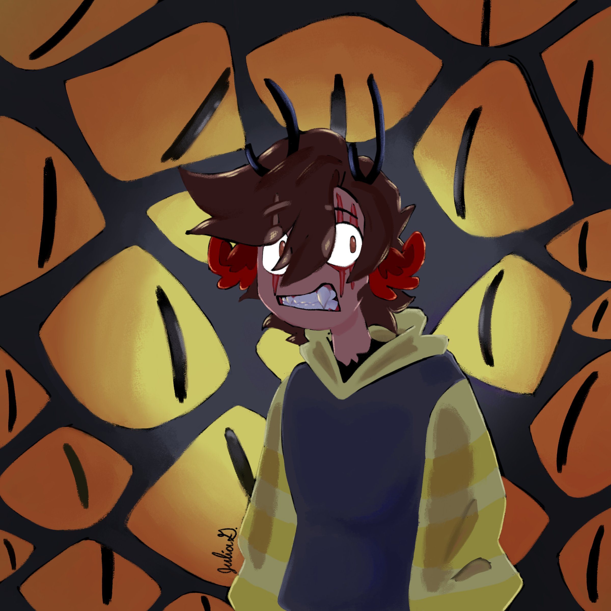
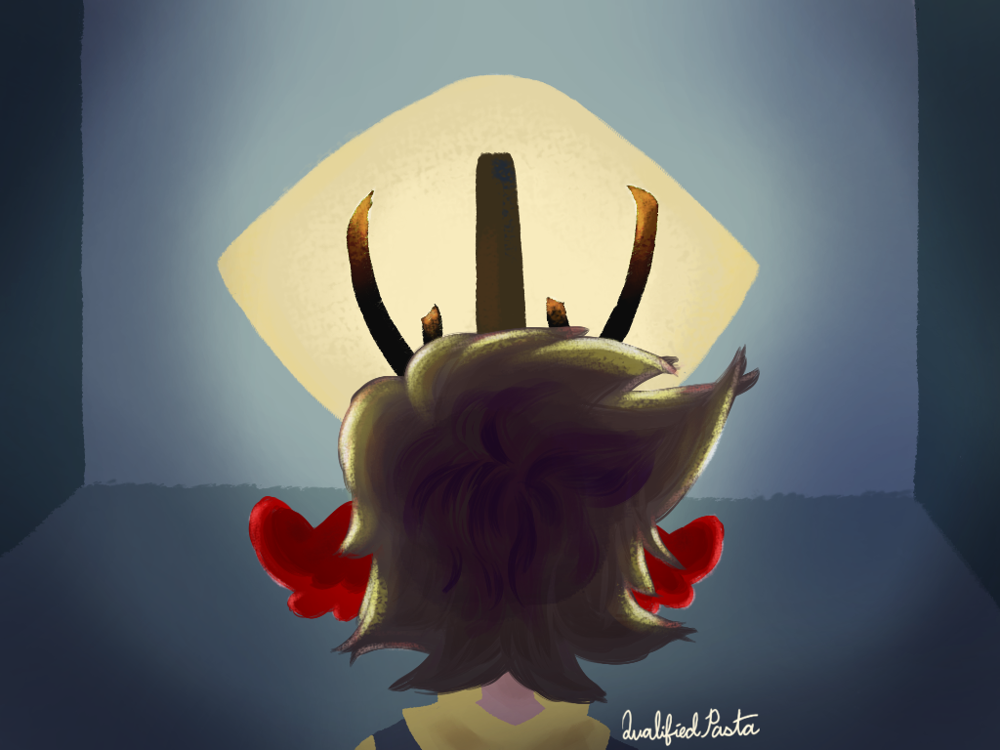
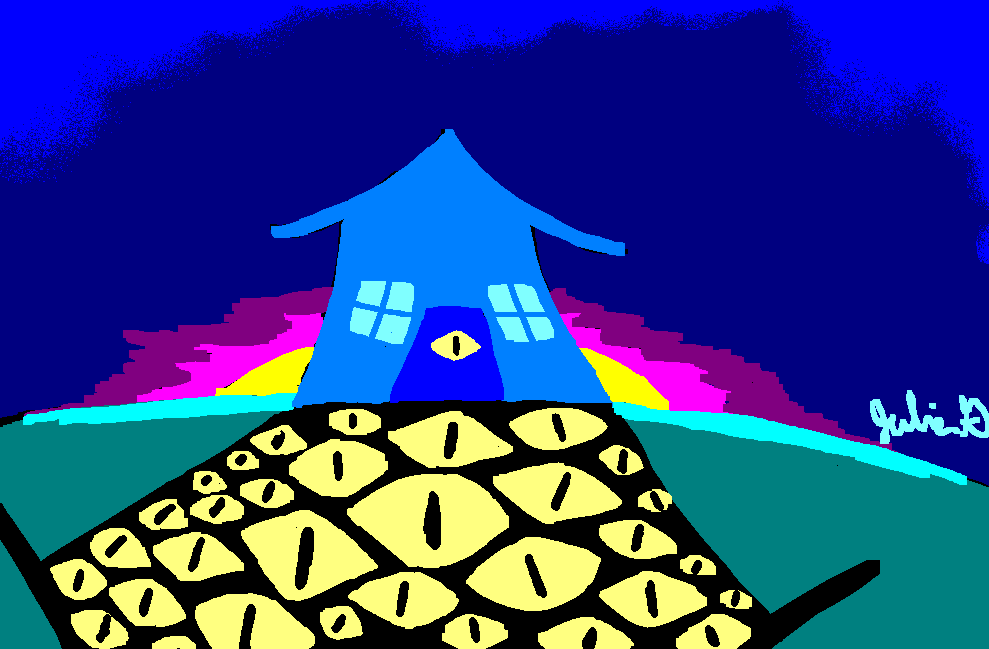

Red opened her eyes. Her feet were already moving beneath her even though she had just woken up. Had she been sleepwalking? She hadn't done that
since she was a kid. She took in her surroundings. The walls of a cave surrounded her with a lantern hanging from the ceiling every few paces.
The tunnel seemed to go on infinitely forward and backward. There wasn't anything else for her to do except move forward and listen to her own
thoughts. She wanted to silence her brain. Things she didn't want to think about were making their way in. How did I get here, and how do I get
back? Were the most prevalent, but there were darker things trying to burrow their way through her skull.
Red tried to think of anything to get her mind off of the fear trembling her. The curiosity of what she had on her was the thought she decided
to entertain. Maybe there was something that could get her out of this. The front pocket was a dud as well as the back two, but her front left
pocket yielded different results. She recognized the object in her hand while it was still in her pocket. It was something that she thought she'd
never have to see again, and didn't make sense to be in her pocket. She didn't take it with her on her trip, and last time she saw it was when she
put it in a locked box under her bed. So how did it make its way into her pocket now? She stared at the rectangular grey metal lighter for too long
of a moment. It stared back at her with the familiar eye engraved onto one side. She put it back into her pocket with a quick motion.
The thoughts she tried so hard to push came back like a wave of the ocean. How did that get there? Repeated over and over again in her mind. Her
distraction failed. Quickly, she tried to distract herself with anything she could think of, but she was drawing blanks. Her pace sped up slightly,
and her red ears twitched like they were antennas.
“HELLO” Red called out. “IS ANYONE THERE.” It was hopeless attempt to find some sort of comfort in the growing uneasiness.
“Right here” an echoing voice called out. Red would've felt better if no one answered her call. She hadn't expected anyone to in the first
place. Her previous panicked thoughts were replaced with all new ones. “I'm right here” the voice called again, this time with an accompanying
pain in the back of Red's left hand that stopped her in her tracks. Her hand burned and seared like someone dropped a hot coin on right on the
back of her it. She pinpointed where the voice was coming from only after looking at where the invisible fire on her hand.
“Welcome Inside” called the newly formed eye on the back of her hand then blinked once and remained silent.
Footsteps echoed throughout the cold damp cave as Red fought to keep herself calm. It became easier the longer
she walked; the exhaustion pushed the panic out of her mind.
“Keep going” The Eye on her hand said. “You’re almost there.”
She’d been walking for what felt like hours now. Honestly it could’ve been hours. There was no way of telling.
She didn’t have her phone or watch on her. That was probably the only part of this whole confusing ordeal that
made sense. Red had gone on a weekend camping trip with a few of her friends. She remembered putting both of which
in her backpack before going to sleep because she was worried one of her friends would step on them in the dark if
someone needed to get up for whatever reason. This tiny shred of logic in an otherwise illogical setting kept her
going. This hope came with downsides though, as that meant no map for her to follow, or way for someone to track her
location when she was inevitably found to be missing.
The other parts of the mystery were what kept her guessing. For starters, resting carefully inside her pocket was a
metal lighter with an eye symbol carefully etched into one of the sides. She recognized it, but wished she didn’t. At
a glance, nothing seemed to be very special about it. There was nothing special about it either. It was a normal,
everyday lighter. Obviously it was a bit nicer than something you’d see at a gas station, but that was it. The uniqueness
came with were the people it reminded her of and the memories it held. The very thought of the memories it could inflict
made red want to claw her eyes out. The scars around her eyes making it look like she already tried to.
The other mystery of this whole thing was her left hand. A yellowish eye with a long pupil sat too comfortably on her left
hand. Red couldn’t help but think that any normal person would’ve been driven to the edge of insanity if they’d seen it, but
the object that shouldn’t have been in her pocket held greater importance to Red. It kept her asking what this was all about.
The eye blinked at her, as it told her to move forward.
“You’ll be able to see the exit soon” it said with an uncomfortably cheeriness in it’s voice. Red hoped it was right. If she
could just leave this weird place and find her friends, she could push down all her undesired memories again. This cave gave her
the creeps anyways. She felt like she was being stared at, but when she turned back no one was there.
“Here it is” called the voice as red walked up to an old and kind of gross looking door. Red wanted to ask what A door was doing
in what she assumed was a cave, but there were other things on her mind. The door was yellowing with various stains. The disturbing
piece of wood was also covered in claw marks and chipped in some places, which added to the uneasiness the door gave her. The most
intriguing, or perhaps the most disturbing, part was the eye that was carved very purposefully into the door. It was the same eye
that was engraved in the lighter that sat in red’s left pocket. The same lighter that kept giving her flashbacks to a very different
time in her life.
Hesitantly, she walked closer to the door. Debating in her mind for a second whether or not she should actually go through with it,
but what other choice did she have? It’s not like she could go back now. Red carefully opened the door and stepped through the inky
darkness in front of her.

Red was hoping that this door would lead to the outside, but felt disappointment as she saw a blank room in front of her. The exception
to the emptiness was a giant eye that covered almost the entire wall across from her. Red was questioning if this eye was also alive, or
just meant as an intimidation to scare her. She got her answer soon enough as it began to speak.
“Why hello there” the big eye called out. “Who are you?”
“Uhh… No one special” Red responded nervously.
“Well I know that. I meant what’s your name?” The eye had a smidge of sarcasm in its voice with its correction.
“My name is Red.”
“Now there’s a fitting name. With the ears as red as blood and all.”
“Hey, I thought this was supposed to be the exit. That’s what this thing said.” Red pointed to the eye on her hand that now remained silent.
“And you TRUSTED it? HA!” The big eye widened with amusement as it laughed at her. “That was a dumb decision.”
Red looked to the side with guilt. Yeah. She thought. That was dumb. She turned around and tried to silently walk out the door while the big
eye was distracted by laughing at her. At least now she knew to go the other direction. Her attempt was met with defeat as the door handle
wouldn’t budge.
“Well I suppose it wasn’t completely lying. This is the way you’re supposed to go, but I wouldn’t call it an exit. If you’d gone the other
direction, you would’ve reached nothing. The lanterns just get darker till you reach a wall.” Red pondered in stunned silence as the big eye’s
words continued, “Even if you don’t believe me, you’re not allowed to go backwards. You have to Keep moving forward.”
“Where am I supposed to go from here, then? It’s not like there’s anything in this room besides me and you?” Red fear turned into anger. The big
eye could definitely tell it was getting on her nerves, but her irritation was just funny to him.
“All you had to do was ask.” The big eye said with one last chuckle. The eye closed and opened again as it revealed another tunnel.
She walked forward, careful not to trip on the doorframe the eye shape created as she entered the new tunnel. The eye closed behind her and the
light of the previous room was replaced with something new. Teeth that she could now see were growing out of the walls around her started to give
off light like demented glow sticks. Her thoughts came back around to how a normal person would react. They probably would’ve vomited at the sight,
but she didn’t. She watched as her shoes started to become stained red with the pools of blood that covered the uneven floor of the passageway. Red
was starting to understand what this was all about, and she didn’t like it one bit.

The area around her was unusual. The floor was rocky and uneven, but the walls were a desaturated red with a muddy texture. All around her were teeth
embedded in the walls, ceiling, and floors. They acted as a light source to guide her way. The sounds of wet footsteps filled the tunnel. The uneven
flooring caused small puddles to form on the ground. Every pace gave her shoes a new coat of red. Red had to hold her nose to keep the unfortunate
smell from piercing her nose. The scent didn’t make her nauseous like it would many other people, it just made her upset. She decided it would make
her life easier if she just breathed through her mouth for now.
Red could see the light at the end of the tunnel getting closer. It was already morning. She could only hope that the tunnel would let her out somewhere
close to civilization as the growing light blinded her vision. Red kept her eyes closed as she interpreted her surroundings for a moment. There was sand
beneath her feet, but she didn’t live near the beach. As she drew a large breath through her nose, there was an unexpected smell that went along with
it: human blood. The dreaded smell made her mouth water and a set of sharp fangs revealed themselves. Two piercing teeth in the top of her jaw and two
slightly smaller, but still just as cutting, teeth pointing up from the bottom of her jaw. It was a reflex she didn’t like, and wasn’t expecting to go off.
Red swallowed hard and breathed through her mouth as she opened her eyes again. In front of her was a thin beach that formed a path with a forest to the left
and a red lake to the right. The smell coming from the lake was undeniably the smell of blood. Human blood. Red continued to walk as the fangs retracted themselves.
The air around her was eerily silent. Not a single creature around her to fill the quiet. Nothing was rustling in the grass or moving in the trees or
scuttling along the sand. No bugs trilling, birds singing, or creatures of any kind to be seen or heard anywhere. She was completely and utterly alone.
The only sound that could be heard was her stomach growling. It was begging for the sustenance that red could not give it. There wasn’t even an animal
for her to hunt. Not that she had any skill in hunting animals anyway. The only thing around for her to eat was the blood in the lake.
It had been years since red had drank human blood. She usually stuck to either pig’s or cow’s blood these days. It was far easier to come by and didn’t
give her an enormous pang of guilt afterwards. Even if no one would be hurt by drinking this blood, it still didn’t make her feel right. It was hard to
stop drinking once she started and didn’t want the feeling that came after drinking human blood, but that wasn’t the only thing. What if she got back to
her friends and was still bloodthirsty? What would stop her from doing what she’d sworn off doing for years now? What would stop her from the unimaginable?
Red shook away the thought and kept walking.
At this point Red had a choice to make. Go in the forest or stay along the beach. She thought for a moment. Going into the forest would make the most sense
if she knew it was the same forest that she was in with her friends last night, but she knew there was more going on. Red wasn’t just walking on a normal
beach and that likely wasn’t the same forest, she was inside some kind of labyrinth. A convincing forgery of reality. As much as Red wanted to believe she
just sleepwalked into some cave, had a weird night, and could now go back home, she knew better. The only living creature around was her, and giant lakes of
blood didn’t exist in her world. Whatever was going on, one thing felt clear. Whoever brought her here was trying to lead her somewhere, and the beach was a
continuation of the path the caves brought her on, so that’s the direction she went.

After walking for hours, Red’s feet were aching. Her limbs felt heavy and weak. Her lips were dry and cracking from the effort to breathe through her
mouth. If the smell didn’t get to her nose, it was just bearable enough to continue walking, but now she was so exhausted that moving forward felt impossible.
It didn’t help that the lake seemed to go on forever as an impossible distance behind her and an infinite length in front of her.
Red sat on the beach for some much needed rest. She was definitely starting to crash. Even with some sleep, the feeling of pain and hunger that she felt now,
wouldn’t go away. What she needed was food.
Red slowly looked up. The deafening silence added to the brain fog that the hunger had started. If you're hungry, you should eat, a voice desperately tried
to convince. There's plenty of food right here. Red looked up at the sky. The sun was starting to set. There was so much blood, and she was just so hungry. A
piece of wood drifted its way towards Red. It was a round section of bark that would make the perfect makeshift bowl for drinking out of. If only Red could
convince herself that this gift was all just a coincidence.
Red picked up the bowl and felt her hands move outside of her telling them what to do. She couldn’t stop what was happening anymore. It took all her strength
to slow her limbs. Red dipped the bowl into the blood filled lake, permanently staining one side red. She brought it to her lips and felt her fangs show
themselves once more. The blood coated her mouth, teeth, and lips. It flooded her mouth and fell from her face as she felt the pain of hunger and weariness
lift off of her and be replaced with an empty feeling. Drinking human blood made her feel sick, but at the same time it gave her new strength to keep going.
Red stood up and walked once more. The end of the lake was not too far, now that she could see the end.

In production...